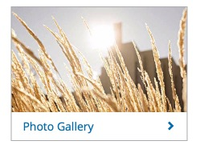
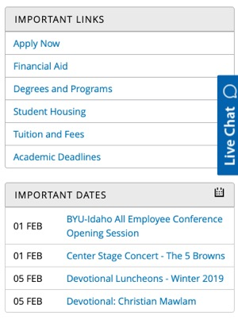
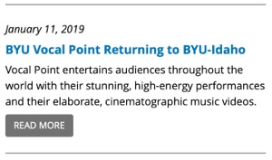
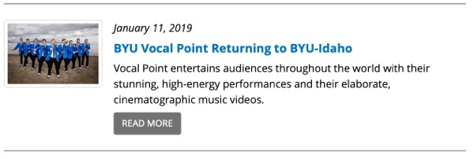

Advanced CSS
WDD 331
Layout: (Re)build a real site 1: part A
The last few years have been really exciting for web designers/developers. With the arrival and support for things like Flexbox, CSS Grid, and others we finally have not just good...but great tools to accomplish our layouts.
Suddenly things that were not possible (or at least things that involved a lot of pain to do) are not only possible but in some cases easy to do. It's time to get out of ruts and experiment with these new tools.
All of that being said, it is also important to develop good foundational skills building traditional designs. This activity is designed to both encourage us to look forward to new possibilities in Web Design, and make sure that we have the core skills necessary to move ourselves and our designs forward.
Objective
Using HTML and CSS with accessibility in mind (no CSS this week), re-create One of the following webpages:
Activity
This is a two part activity that will span two weeks. This week will focus on writing good HTML for a webpage. Thought should be given to accessibility, semantics, and reusability. You should include classes on your html elements, but we will not be writing any of the CSS for the page this week. It will be done in Part B of this activity. You should really plan on doing part B immediately following this part.
-
Review the design
For the rest of this exercise we will be re-building the home page of the site you chose above. Begin by familiarizing yourself with the page and how it responds at different screen widths. Because of time constraints we will be excluding certain parts of the page and making a few small changes.
- First we are going to simplify the header. Since you should start with the mobile layout for the page, build the header as it looks for mobile. We are going to keep the mobile header on all layouts. You will also not be required to make the buttons in the menu work. Even with two weeks, we just don't have time.
- Second, you should use the text and images that are currently on the page. Copy the images to your computer and link to them locally instead of linking to the versions on the servers of the site you are re-creating.
- Pay attention to the details of the page. This assignment is very much about details!
- Consider this design through the lens of the component. How many components do you see?
What is a component?
Modern web pages are generally built from blocks...like lego bricks stacked together. Those blocks of styled content are often called components. Components are often re-used. Sometimes with different content but the same styles, sometimes with nothing changing.
Below you can find some examples of what these building blocks might look like.

Interest Box 
List of Links 
Newsroom Small screen 
Newsroom Large Screen Notice how with the one labeled "Interest Box" that pattern could be re-used many times with different content. The same with the "Newsroom" blocks. Whereas the "List of Links" might be repeated just as it is across several pages.
-
Gather resources
You will need to spend some time in the beginning gathering information about the page. For example what font(s) are they using? Where do the icons the use come from? what images will I need? Colors? etc. Begin gathering those resources and add them to a folder on your computer that you will build the page in. Create your
index.html, andstyles.scssfiles.In the case of fonts if the site is using something proprietary then find something close that will work. For example on the Church website the fonts are listed like this:
font-family: "Ensign:Sans", Arial, "noto sans", sans-serif;"Ensign:sans" is a font that we don't have access to...so it is fine for it to default to "Arial". This assignment is more concerned that the rest of the styling is correct: layout, colors, sizes, spacing, content. The font should be the right size/color/weight, but it does not have to be the exact same font otherwise.All three sites use SVG images extensively. Notice on the FamilySearch site for example the icon that they use to choose a different language:
It is an SVG. you can copy/paste that code out of the HTML for that page to use in your page.
-
Begin the HTML
Next begin writing the HTML for the main page. As you do pay close attention to groupings you may need to do in your markup. Add classes as you see necessary. Think about accessibility in your HTML as well. For example take this bit of code from BYUI.edu
<a aria-label="home page" href="/" data-cms-ai="0"> <img class="PageLogo-image" src="path-to-img.jpg" alt="/" width="150" height="150"> </a>That logo image also acts as the link back to the home page. If someone were navigating the site with a screen reader they would not know where that link went if it were not for the
aria-label="home page"It is a good practice to use this attribute with any link that uses an image or icon for the clickable content.Sometimes the
aria-labelwill be accompanied with anaria-hidden="true". If you inspect this element taken from the FamilySearch page: , you can see an example. Notice that the icon is inside of a button. Why a button and not a link you may be asking? Because when you click on it you are not navigating somewhere else, but performing the action of toggling open a menu. So in this case the screen reader would read the aria-label on the button, then skip the svg.Don't put the
aria-hiddenon the button (or container of what you are hiding)! If you do then you will hide the whole thing from the screen reader.One other thing to note with accessibility. If you open the homepage for the site you have chosen...then click in the URL bar, then hit "tab". Tab is how people navigate pages with their keyboard. If you tab to target a link for example you can then hit "enter" and it will navigate to that link. How many times would you have to hit "tab" to get down to the content on your page? It could be dozens sometimes just to get past the navigation.
On your site you should have noticed something however. A new element should have popped up that said: "Skip to Main Content". This provides a quick shortcut for those navigating with their keyboard. You should include this in your version.
Start your work by styling the header and nav to match the site you have chosen at a mobile size. Then adjust it for larger desktops as discussed above.
As you style put some thought and planning into the naming and structure of your SCSS as well. See if you can apply the principles from a CSS architecture like BEM for example.
-
Component Design
Continue your work on this site by writing the HTML for the components you should have identified above. Have a goal of keeping your HTML markup as simple as possible, while focusing on re-use by adding classes to each one. Something like BEM would work great here to help you to intelligently name your classes.
Ideally you should be able to take the HTML you wrote for one of the components, copy/paste it and replace the content (text and/or image src) while leaving the HTML and CSS the same. Sometimes you will have slight changes to one instance of a module, in that case you might have a modifier class or two.
Modifier classes according to BEM
It was encouraged earlier that you use a name convention like BEM for this assignment. If you have not been introduced to it before, please stop and go read the linked introduction above. BEM stands for Block, Element, Modifier. In our case we can consider each of the components discussed above as blocks. The blocks or components are made up of parts: elements. Slight differences in components would be accomplished with Modifiers.
For example there are two versions of the list of links...one with a a grey header , and one with blue header. The rest of the styling is the same. A good class name for the list of links component might be
.list-links. Each list has a header as part of it. That element would be represented by something like this:.list-links__header. We might decide that the grey version of the header is the default, so if we wanted it to be blue sometimes we might add a class like this:.list-links__header--blueNext week when you start writing the SCSS to style the site that could be represented like this:
.list-links { // base styles for the component &__header { // base styling for the header element...with grey header. &--blue { // code to change the header to be blue } } }(This would compile to this:)
.list-links { // base styles for the component } .list-links__header { // base styling for the header element...with grey header. } .list-links__header--blue { // code to change the header to be blue }Add the additional class to the appropriate instance of your component.
-
Finish the HTML
Once you have the HTML for your components built, write the rest of the HTML for the page to account for all of the content. Re-use the component code as appropriate. You should use the images and text currently on the site.
You should add classes as you feel necessary (again use some sort of naming system like BEM), but you do not need to write any of the SCSS this week (unless you want to work ahead). You will most likely end up modifying the classes (adding and removing) you add this week when you do start styling...that is expected and perfectly fine.
While it is fine to look at the HTML for the actual site for inspiration while completing this step, resist the temptation to just copy/paste large parts of it. The HTML on the actual is quite a bit more complex than we really need it to be and using much of it will most likely end up taking you more time than if you just wrote the HTML from scratch by yourself.
You should think ahead a little as well while writing your HTML. Consider how you think you might accomplish the layout of the site as well (Flexbox or Grid). Make sure that your flex/grid items are all grouped together under the right flex/grid containers.
-
Check your site with the WAVE tool
Once you have the HTML written, run your page through either the WAVE tool or the Chrome Lighthouse tool to see if it finds any serious issues with the accessibility of your HTML. If you use WAVE it will be easier if you install the Chrome extention, then you should fix any errors. If you used Lighthouse you should shoot for a score of above 90.
Rubric
- HTML for the selected Home page re-created. (Everything but with the simplified navigation bar.)
- Attention paid to Accessibility: No errors from WAVE or score of 90 or higher from Lighthouse.